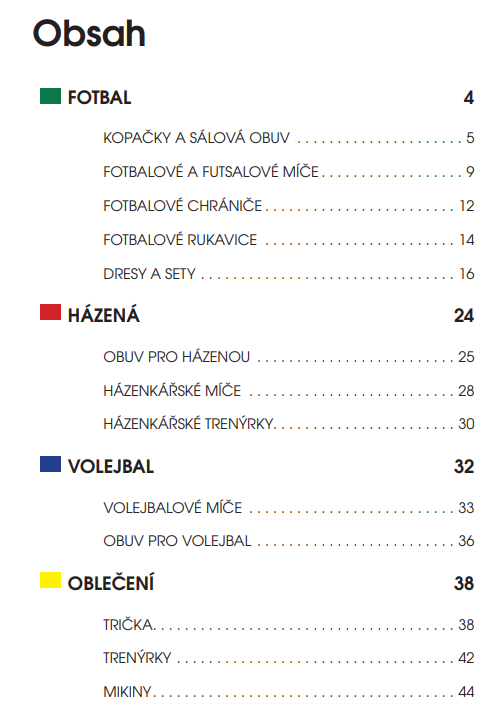
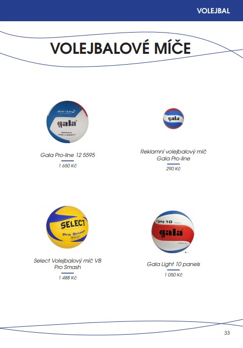
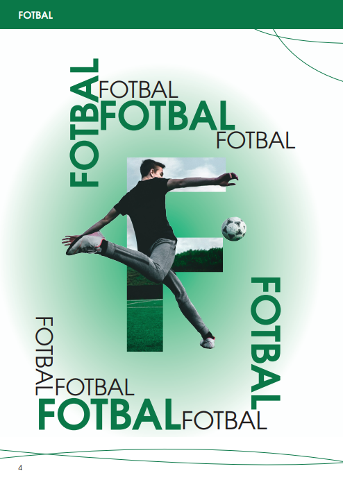
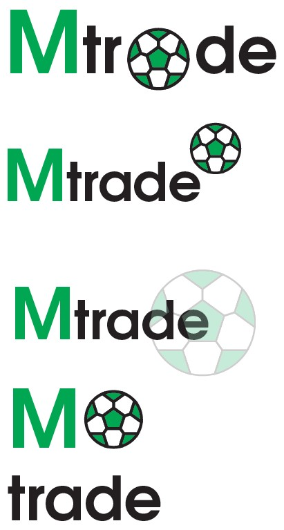

Na téma maturitní práce do předmětu Grafika, design a multiméda jsem se ve školním roce 2024/2025 rozhodla vytvořit katalog sportovní firmy Mtrade. Takový sportovní katalog je téměř nezbytnou součástí každé firmy a dokáže přitáhnout mnoho nových klientů a proto pro mě bylo důležité vytvořit katalog, který svou moderností zapadá do dnešní doby. Snažila jsem se o to aby byl katalog přehledný, jednoduchý a smysluplný. V rámci tohoto projektu jsem se rozhodla pozměnit logo firmy Mtrade tak, aby bylo esteticky v harmonii s novým moderním časopisem. Tvorba katalogu byla mojí hlavní prioritou a návrh loga jsem brala jako vhodný a vítaný doplněk. Při tvorbě katalogu jsem se snažila být co nejvíce pečlivá a doufám, že odráží vizi a hodnoty firmy.

Tento návrh obsahové stránky pracuje s jasnou strukturou a barevným rozlišením jednotlivých sekcí. Cílem bylo vytvořit přehledný, minimalistický a zároveň vizuálně hravý rozcestník, který uživatele intuitivně provede celým katalogem.

Produktová strana kombinuje jednoduché rozvržení, čisté linie a barevné akcenty podle konkrétní sportovní kategorie. Zaměřila jsem se na vyváženou kompozici, aby stránka působila moderně, vzdušně a nebyla zahlcená nadměrným množstvím prvků.

Tato dvoustrana slouží jako vizuální úvod do jednotlivých sportovních sekcí. Pracovala jsem s úpravou fotografií v Adobe Photoshop a s ořezovými maskami, abych vytvořila dynamické, ale stále čisté kompozice, které sjednocují celý vizuální styl katalogu.

Součástí projektu byl také návrh modernizovaného loga Mtrade. Vychází z původní identity, ale pracuje s čistší typografií a jemnými tvarovými úpravami. V některých variantách jsem doplnila i stylizovaný fotbalový motiv, který ladí s celkovým moderním charakterem značky a podporuje její sportovní zaměření.